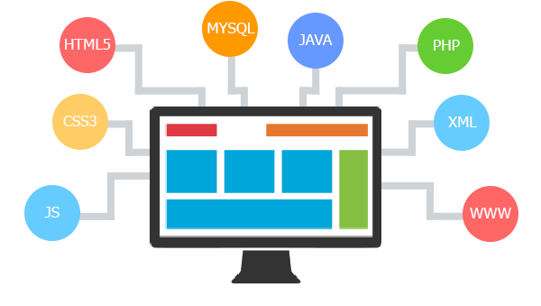

BOEHLER Gabriel
Bienvenue sur mon site internet porte folio, je m'appelle Gabriel Boehler, je suis actuellement en première année de Brevet Technicien Supérieur (BTS) Service Informatique aux Organisations (SIO).
Pour plus d'informations sur les metiez du numérique, veuillez cliquer ici